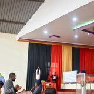

Main campus
↗Embu Central Campus
Sundays: Bible hour 9:00 AM, main service 10:00 AM
Manyatta, Embu County
A Christ-centred church family worshipping together in Manyatta, Embu. Come as you are. You belong here.

Sundays: Bible hour 9:00 AM, main service 10:00 AM
Manyatta, Embu County
The principles that guide how we worship, lead and serve our community in Embu and beyond.
We exist to make the message of Christ accessible, relevant, and life-changing for everyone who walks through our doors.
Nobody stands alone. We create authentic spaces for every generation to find belonging, healing, and family.
We go beyond the four walls of the church to bring practical hope, charity, and transformation to the city of Embu and beyond.
Leading with a deep passion for spiritual growth, community empowerment, and practical gospel teaching since 2003. Dedicated to building an authentic home for individuals and families across Kenya.
About Perazim
Resources our church family uses at home, in youth groups and in Sunday school.
Sundays: Bible hour at 9:00 AM and main service at 10:00 AM, in Manyatta, Embu. Call or WhatsApp us on 0710 772 227 and our welcome team will help you get connected.